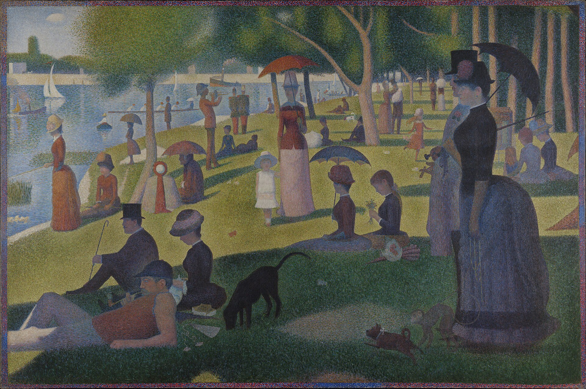

조르주 쇠라의 A Sunday on La Grande Jatte — 1884는 한가로운 일요일 오후를 그린 그림처럼 보인다. 그러나 이 작품을 오래 보면 휴식의 장면보다 먼저 질서의 장면이 보인다. 사람들은 공원에 흩어져 있지만 아무렇게나 흩어져 있지 않다. 양산, 모자, 드레스, 개, 배, 나무 그늘, 강의 수평선은 모두 화면 안에서 일정한 거리와 방향을 가진다. 이 그림은 산책하는 사람들의 풍경이면서, 근대 사회가 사람과 사물과 색을 어떻게 배치하는지 보여 주는 거대한 관찰 장치다.
Art Institute of Chicago의 공개 데이터는 이 작품을 1884-86년에 그려지고 1888-89년에 테두리가 더해진 유화로 기록한다. 크기는 207.5 × 308.1 cm에 이르는 대형 캔버스이며, Helen Birch Bartlett Memorial Collection으로 소장되어 있다. 이 물리적 규모를 기억해야 한다. 작은 화면에서 보면 쇠라는 우아한 점묘화지만, 실제 크기의 쇠라는 관람자를 한 사회의 규칙 속으로 들여보낸다. 우리는 풍경을 보는 것이 아니라, 풍경을 가능하게 하는 거리와 형식의 체계를 본다.
쇠라의 점은 단순한 장식이나 화가의 개성이 아니다. 점묘는 색을 미리 섞어 하나의 덩어리로 만들지 않고, 서로 다른 색점을 나란히 놓아 관람자의 눈에서 다시 결합되게 한다. 색은 캔버스 위에서 끝나지 않는다. 관람자의 시각이 그것을 완성한다. 오늘 함께 읽은 알렉산드라 로스케의 색의 역사가 색을 과학, 산업, 표준, 감각의 역사로 본다면, 쇠라의 화면은 색이 회화 안에서 어떻게 하나의 사회적 기술이 되는지를 보여 준다.
여기서 니클라스 루만의 예술체계이론이 자연스럽게 들어온다. 루만에게 예술은 사회 바깥의 순수한 감정이 아니라, 사회 안에서 자기 고유의 관찰 방식을 만들어 내는 체계다. 이 말은 쇠라의 그림 앞에서 매우 실감난다. A Sunday on La Grande Jatte는 일요일 공원을 그대로 복사한 그림이 아니다. 그것은 “공원을 어떻게 볼 것인가”라는 관찰의 조건을 만든다. 한 사람 한 사람의 표정은 희미하지만, 그 희미함 때문에 오히려 관계의 구조가 또렷해진다. 개인은 사라지는 것이 아니라, 체계 안에서 보이는 방식으로 다시 배열된다.
이 그림의 차가움은 그래서 약점이 아니다. 쇠라는 인물들의 내면을 서정적으로 열어 주지 않는다. 대신 같은 공간에 모였으나 서로 다른 규칙으로 존재하는 사람들을 보여 준다. 가까이 있지만 접촉하지 않고, 함께 있지만 공동체가 되지 않으며, 같은 빛 아래 있지만 같은 리듬으로 살지 않는다. 근대 도시는 사람을 모으지만 친밀함을 보장하지 않는다. 쇠라의 점묘는 바로 그 사실을 감정의 폭발 없이, 거의 과학적 평정으로 기록한다.
퀜틴 스키너의 근대 정치사상의 토대 2가 종교개혁기의 정치 언어를 다룬다면, 쇠라의 그림은 언어가 아니라 배치로 정치적 근대를 보여 준다. 스키너가 묻는 것은 사람들이 어떤 말로 권위를 세우고 저항을 정당화했는가이다. 쇠라가 보여 주는 것은 사람들이 어떤 공간 속에서 서로를 관찰하게 되었는가이다. 공원은 사적 공간도, 왕궁도, 교회도 아니다. 그것은 근대적 여가의 공적 무대이며, 계급과 성별과 시선이 예의 바르게 나뉘는 장소다.
따라서 이 그림의 평온은 순진하지 않다. 오른쪽 전경의 우뚝 선 여성과 원숭이, 중앙의 정지한 아이, 강가의 배, 멀리 흩어진 인물들은 모두 한 사회가 자기 자신을 보기 위해 만든 표지처럼 놓인다. 쇠라는 그들을 풍자하지도, 찬양하지도 않는다. 다만 질서 있게 보이도록 만든다. 이 중립성이 오히려 더 날카롭다. 정치 언어가 권위를 만들듯, 시각적 형식도 사회적 위치를 만든다.
오늘 함께 들은 코프만의 쇼스타코비치 4번은 쇠라와 전혀 다른 세계처럼 보인다. 그러나 둘 사이에는 중요한 공통점이 있다. 둘 다 큰 형식 안에서 시대의 압력을 드러낸다. 쇼스타코비치 4번은 1930년대 소비에트 문화정치의 긴장 속에서 완성되었고, 작품은 오랫동안 공개적으로 제 자리를 얻지 못했다. 그 음악은 한 사회가 예술을 어떤 방식으로 보이게 하거나 보이지 않게 만드는지를 거의 폭력적으로 들려준다. 쇠라의 공원이 질서 있게 보이는 사회라면, 쇼스타코비치의 4번은 질서가 음악을 압박할 때 내부에서 어떤 파열이 생기는지를 들려준다.
브람스의 위치는 또 다르다. 그는 쇼스타코비치처럼 국가 권력의 직접적 압박 아래 있지는 않았지만, 19세기 후반의 음악사적 압력 속에 있었다. 베토벤 이후의 교향적 유산, 바그너와 리스트가 만든 진보의 서사, 고전 형식의 무게가 모두 브람스의 뒤에 서 있었다. 아믈랭이 연주한 피아노 협주곡 2번은 그 역사적 부담을 잘 들려준다. 이 작품은 거대하지만 과장되지 않고, 협주곡이면서 실내악적이며, 전통을 붙들면서도 그 안에서 늦은 고백을 만든다. 쇠라가 인상주의 이후 색을 과학적 질서로 다시 세웠다면, 브람스는 베토벤 이후 큰 형식을 사적인 목소리의 공간으로 다시 세웠다.
그러므로 오늘의 쇠라는 그림 한 점의 주인공이 아니라 Issue 16 전체의 중심이다. 루만은 예술이 사회 안에서 어떻게 자기 관찰 방식을 만드는지 설명하고, 로스케는 색이 감각에서 제도로 바뀌는 역사를 보여 주며, 스키너는 정치 언어가 권위와 저항의 조건을 만든다는 사실을 보여 준다. 쇼스타코비치는 형식이 정치적 압력 아래 찢어지는 순간을, 브람스는 형식이 역사적 부담을 견디며 사적인 빛을 얻는 순간을 들려준다. 쇠라의 점들은 그 모든 문제를 조용히 한 화면에 모은다.
A Sunday on La Grande Jatte는 그래서 휴식의 그림이 아니라 체계의 그림이다. 작은 점들이 큰 화면을 만들고, 개별 인물들이 사회적 장면을 만들며, 색의 과학이 여가의 풍경을 만든다. 이 그림 앞에서 우리는 아름다운 일요일을 보는 동시에, 아름다움이 얼마나 많은 계산과 반복, 분류와 거리 위에서 성립하는지 보게 된다. 그리고 그 사실 때문에 이 그림은 여전히 현대적이다. 오늘의 우리는 여전히 점처럼 흩어져 있고, 여전히 어떤 형식 안에서만 서로를 본다.
자료
{kind=link}
Paul Archive Notes · 오늘의 이미지